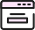
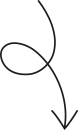
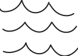
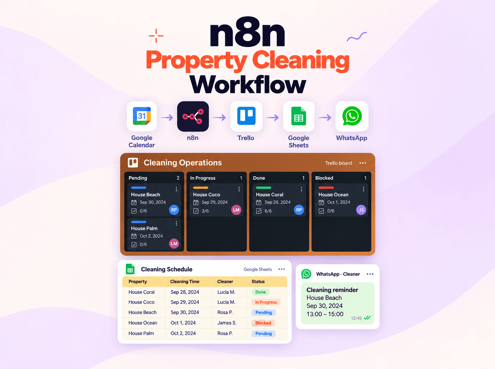
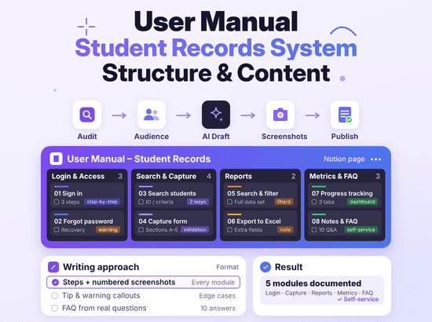

Soy Génesis,
Coordinadora de Proyectos.
Si fuera un diagrama de Venn, los clientes estarían en un círculo y los equipos técnicos en el otro. Yo estaría justo en el medio, ayudándolos a trabajar juntos y automatizando las partes aburridas.
Cómo puedo ayudar a tu equipo
Coordinación de proyectos
Organizo tareas, doy seguimiento a los plazos y mantengo al equipo al tanto del avance y de los pendientes.
Soporte operativo
Me encargo de las tareas diarias, mantengo los registros organizados y doy seguimiento a los pendientes para apoyar al equipo.

Documentación de procesos
Creo guías paso a paso, manuales de usuario y plantillas que ayudan a las personas a entender qué hacer.
Automatizaciones sencillas
Conecto herramientas para reducir el trabajo repetitivo, como copiar información, enviar recordatorios y actualizar registros.


Más sobre mí
Hola, soy Génesis, coordinadora de proyectos con una mente creativa y pasión por la tecnología.
Ayudo a los equipos a organizar su trabajo y a convertir ideas en tareas claras. Mi experiencia en atención al cliente me ayuda a entender lo que las personas necesitan y a encontrar soluciones prácticas.
Disfruto aprender creando mis propios proyectos y explorando cómo la tecnología puede facilitar el trabajo diario.
Mi trayectoria hasta ahora
Empecé en atención al cliente y luego pasé a soporte técnico, resolviendo problemas de software y sabiendo cuándo escalarlos. Después me convertí en Coordinadora de Proyectos, coordinando el trabajo diario de 14 a 19 desarrolladores.
Más sobre míMAYO 2024 - MAYO 2026
Coordinadora de Proyectos · SaaS
Coordiné el trabajo diario de 14 a 19 desarrolladores, manteniendo las tareas claras y dando seguimiento al avance.
JUNIO 2022 - MAYO 2024
Soporte Técnico · SaaS
Colaboré con equipos multifuncionales para optimizar el rendimiento y mejorar la experiencia del usuario.
JUNIO 2018 - MARZO 2020
Representante de Atención al Cliente
Ayudé a los clientes con sus pedidos, gestioné pagos y llevé el control del inventario.
Descubre algunos de mis proyectos y las ideas detrás de ellos.

Sistema de Seguimiento de Redes Sociales y Operaciones
Un sistema práctico para organizar información, dar seguimiento a actividades y a las operaciones diarias.
Ver caso de estudio
Flujo de Limpieza de Propiedades con n8n
Un flujo de coordinación de limpieza que conecta las actualizaciones de reservas con el seguimiento de tareas y notificaciones por WhatsApp.
Ver caso de estudio
Automatización del Flujo de Proyectos en Jira
Una automatización en Jira que, con un solo clic, crea una lista estándar de tareas para proyectos de landing pages.
Ver caso de estudio
Documentación de Usuario
Una guía clara diseñada para ayudar a los usuarios a entender el software y seguir los procesos con confianza.
Ver caso de estudioAños de experiencia
Desarrolladores coordinados
Solicitudes atendidas por día
por ciento de los casos resueltos sin escalar.
Cómo mantengo los proyectos en marcha, desde la primera solicitud hasta terminarlos.
Herramientas que uso todos los días: